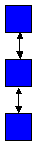
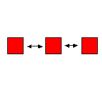
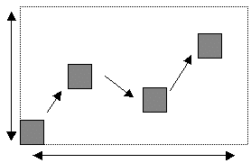
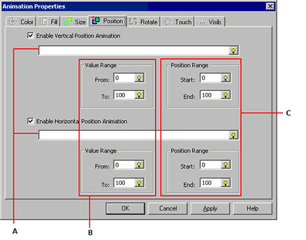
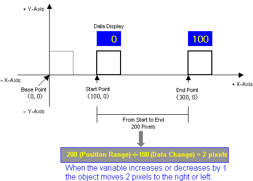

|
|
|
|
|
|
|
|
On the panel, draw an object for which you want to change the position through animation at runtime.
The position of the drawing becomes the base position. For more information on how to draw an object, see Chapter 7, Drawing Graphics.
Open the Animation Properties dialog box using one of the following methods.
|
Method |
Details |
|
Double-click |
Double-click an object on the panel.
|
|
Right-click |
Select the object on the panel, and right-click. Select Animation from the menu. |
|
Icon |
Select the object on the panel, and click the Animation icon from the Edit toolbar.
|
|
Menu |
Select the object on the panel, and then select Animation from the Edit menu. |
Click the Position tab.
Select Horizontal Position Animation or Vertical Position Animation.
|
Vertical Position Animation |
Horizontal Position Animation |
|
The object moves along the vertical axis.  |
The object moves along the horizontal axis.  |

If you select both Vertical and Horizontal, the object moves along both axes.

Assign the variables that determine the position of the object.

Select the variable that determines the horizontal and vertical position. The variable in this field corresponds to the range of values defined in [B].
Enter in the Value Range the minimum (From) and maximum (To) values for the variable. These values must be integers between -2147483648 and 2147483647.

The maximum value displayed at runtime is the 'To' value, even if the actual value is higher. Likewise, the minimum value displayed at runtime is the 'From' value, even if the actual value is lower.
Example: The Value Range is 0 (From) to 50 (To) for Vertical Position Animation

In the Start and End fields, enter an integer between -32768 and 32767 to specify the object's position range (in pixels).
The number of pixels the object moves horizontally depends on the Value Range and the Position Range. For example, for horizontal position animation, the object moves 2 pixels to the right or left when the variable's value increases or decreases by 1.
|
Value Range |
MinValue=0 MaxValue=100 |
|
Position Range |
Start Position=100 End Position=300 |

Click OK to apply the settings and close the Animation Properties dialog box.

If the variable you type in does not exist within the project, the New Variable dialog box opens.
If you click Apply or if you click another animation tab, the settings are applied but the dialog box does not close.